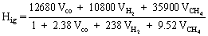
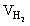
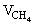
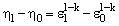
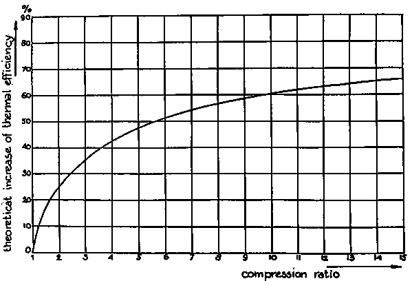
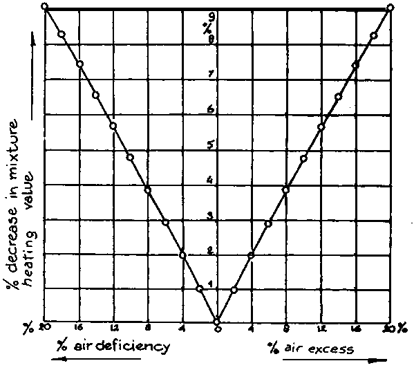

2.1.1 Possibilities of using producer gas with different types of engines
2.1.2 Engine power output using producer gas
2.1.3 Maximizing the power output in producer-gas operation
2.1.4 Resulting power output
2.1.5 Gas quality requirements for trouble-free operation
2.1.6 Use of Stirling engines or gas turbines with producer gas
Producer gas, the gas generated when wood, charcoal or coal is gasified with air, consists of some 40 per cent combustible gases, mainly carbon monoxide, hydrogen and some methane. The rest are non-combustible and consists mainly of nitrogen, carbon dioxide and water vapour.
The gas also contains condensible tar, acids and dust. These impurities may lead to operational problems and abnormal engine wear. The main problem of gasifier system design is to generate a gas with a high proportion of combustible components and a minimum of impurities. How this can be achieved will be shown later. First, the peculiarities of producer gas engines will be discussed both from a theoretical and operational point of view.
Spark ignition engines, normally used with petrol-or kerosene, can be run on producer gas alone. Diesel engines can be converted to full producer gas operation by lowering the compression ratio and the installation of a spark ignition system. Another possibility is to run a normal unconverted diesel engine in a "dual fuel" mode, whereby the engine draws anything between 0 and 90 per cent of its power output from producer gas (17), the remaining diesel oil being necessary for ignition of the combustible gas/air mixture. The advantage of the latter system lies in its flexibility: in case of malfunctioning of the gasifier or lack of biomass fuel, an immediate change to full diesel operation is generally possible.
However, not all types of diesel engines can be converted to the above mode of operation. Compression ratios of ante-chamber and turbulence chamber diesel engines are too high for satisfactory dual fuel operation and use of producer gas in those engines leads to knocking caused by too high pressures combined with delayed ignition (20). Direct injection diesel engines have lower compression ratios and can generally be successfully converted.
The power output from an engine operating on producer gas will be determined by the same factors as for engines operating on liquid fuels, namely:
- the heating value of the combustible mixture of fuel and air which enters the engine during each combustion stroke;- the amount of combustible mixture which enters the engine during each combustion stroke;
- the efficiency with which the engine converts the thermal of the combustible mixture into mechanical energy (shaft power);
- the number of combustion strokes in a given time (number of revolutions per minute: rpm);
Conversion of an engine to producer gas or dual-fuel operation will generally lead to a reduced power output. The reasons for this and possibilities to minimize the power loss will be discussed below.
(a) Heating value of the mixture
The heating value of producer gas depends on the relative amounts of the different combustible components: carbon monoxide, hydrogen and methane.
The heating value of these three gases are given in Table 2.1.
Table 2.1. Heating values and stoichiometric oxygen demands of combustible producer gas components.
|
Gas |
Eff. Heating kJ/mol |
value kJ/m³/ |
Stoichiometric Oxygen demand (m³/m³) |
|
carbon monoxide |
283660 |
12655 |
0.5 |
|
hydrogen |
241300 |
10770 |
0.5 |
|
methane |
801505 |
35825 |
2.0 |
1/ The gas volume is given as normal - m, unless otherwise specified, throughout the publication.
In order to achieve combustion however, the producer gas has to be mixed with a suitable amount of air. The combustible mixture will have a lower heating value per unit volume than producer gas alone.
The amounts of oxygen necessary for complete burning (stoichiometric combustion) of each of the combustible components are also presented in Table 2.1.
The heating value of such a stoichiometric mixture can be calculated from the following formula:

where:
Hig - is the heating value of a stoichiometric mixture of producer gas and air in kJ/m³
VCO - volume fraction of carbon monoxide in the gas (before mixing with air)
- volume fraction of hydrogen in the gas (before mixing with air)
- volume fraction of methane in the gas (before 4 mixing with air).
Heating values of producer gas and air mixtures are around 2500 kJ/m³. When this value is compared with the heating value of a stoichiometric mixture of petrol and air (about 3800 kJ/m³ ), the difference in power output between a given engine fuelled by petrol and by producer gas becomes apparent. A power loss of about 35% can be expected as a result of the lower heating value of a producer gas/air mixture.
(b) Amount of combustible mixture supplied to the cylinder
The amount of combustible mixture which actually enters the cylinder of an engine is determined by the cylinder volume and the pressure of the gas in the cylinder at the moment the inlet valve closes.
The cylinder volume is a constant for a given engine. The actual pressure of the combustible mixture at the start of the compression stroke depends however on engine characteristics (especially the design of inlet manifold and air inlet gate), the speed of the engine (higher speeds tend to result in lower pressures), and on the pressure of the gas entering the air inlet manifold. The former two factors are incorporated in the so called "volumetric efficiency" of the engine, which is defined as the ratio between the actual pressure of the gas in the cylinder and normal pressure (1 atm). Normally engines running at design speeds show volumetric efficiencies varying between 0.7 and 0.9.
The pressure of the gas at the air inlet manifold depends on the pressure drop over the total gasification system, i.e. gasifier cooler/cleaner, and gas/air carburettor. This drop reduces again the entering pressure by a factor of 0.9.
In sum, it must be concluded that the actual amount of combustible gas available in the cylinder will be only 0.65 - 0.8 times the theoretical maximum because of pressure losses on the way to the cylinder. This will obviously reduce the maximum power output of the engine.
(c) Engine efficiency
The efficiency with which an engine can convert the thermal energy in the fuel into mechanical (shaft) power, depends in the first instance on the compression ratio of the engine.
The influence of increasing the compression ratio of an engine can be calculated from the following formula.

In which:
h 1 = engine thermal efficiency at compression ratio
h 0 = engine thermal efficiency at compression ratio
e 1 = engine compression ratio in situation 1
e 0 = engine compression ratio in situation 0
k = a constant equal to 1.3 in the case of producer gas
Figure 2.2 Relation between compression ratio and thermal efficiency of an engine (7)

Figure 2.2 shows the influence of compression ratio on maximum engine power output.
Figure 2.2 Relation between compression ratio and thermal efficiency of an engine (34)

In the case of engines fuelled by petrol, the possible compression ratio is limited by the "octane" number of the fuel, which is a measure of the compression ratio at which detonation or "knocking" (which can lead to severe engine damage) occurs. Producer gas/air mixtures show higher octane numbers than petrol/air mixtures.
It is for this reason that higher compression ratios (up to 1:11) can be employed with producer gas, resulting in better engine thermal efficiencies and a relative increase in engine shaft power output.
(d) Engine speed
Because the engine power output is defined per unit time, the engine power output depends on the engine speed.
For diesel engines the power output is nearly linear with the rpm. For spark ignition engines the power increase is less than linear because of changes in the different efficiency factors.
When the power output of a 4-stroke engine is calculated, allowance must be made for the fact that only one out of every two rotations represents a compression and combustion stroke.
The maximum speed of engines fuelled by producer gas is limited by the combustion velocity of the combustible mixture of producer gas and air. Because this speed is low as compared to combustible mixtures of petrol and air, the efficiency of the engine can drop dramatically if the combustion speed of the mixture and the average speed of the piston become of the same order of magnitude.
In the types of engines that are currently mass-produced, one can expect this phenomenom to occur at engine speeds of around 2500 rpm. Engines fuelled by producer gas should therefore generally be operated below this speed.
The possibilities of maximizing the power output are generally related to the theoretical causes of power loss discussed in the preceding section. They will be treated in the same order here.
(a) Heating value of the mixture
It is evident that the highest heating values for the combustible mixture are achieved at the highest heating value of the producer gas itself. As will be explained later, the heating value depends on the design of the gasifier and on the characteristics of the fuel provided to the gasifier. Minimization of the heat losses from the gasifier is important in order to achieve a high heating value of the gas. The moisture content and the size distribution are two of the most important fuel characteristics.
In mixing the producer gas with combustion air there is an additional reason for power loss because of changes in the composition of the gas, as well as of variations in pressure drop over the gasifier installation and it is very difficult to maintain continuously a stoichiometric mixture of producer gas and air.
Because both excess and deficiency of air lead to a decrease in the heating value of the mixture (per unit volume), both will lead to a decrease in power output as illustrated in figure 2.3.
Figure 2.3 Decrease of the heating value of a producer gas/air mixture as a function of air deficiency or excess (34)

The only feasible way to adjust the mixture to its stoichiometric combustion is by-installing a hand operated valve on the combustion air inlet of the engine and operating this regularly for maximum engine power output.
If maximum engine power output is not needed, it is usually better to operate the engine with a slight excess of air, in order to prevent backfiring in the engine exhaust gas system.
(b) Amount of combustible mixture
Apart from minimizing the pressure drop over the gasifier, cooling and cleaning system and carburettor (while still maintaining adequate gas/air mixing as discussed above) the amount of combustible mixture per engine combustion stroke can be maximized in two ways:
- increasing the volumetric efficiency of the engine by introducing a wider air inlet manifold resulting in less gas flow resistance and smaller pressure drops. The influence of a well designed air inlet manifold is often underestimated. Experiments by Finkbeiner (11) show that a well designed air inlet manifold can increase maximum engine power output by 25 per cent.- supercharging or turbo charging the engine. From the remarks made earlier, it will be clear that increasing mixture pressure at the engine inlet will increase the engine's maximum power output. The recent development of turbo-chargers driven by the exhaust gases of the engine makes this option attractive. However care should be taken to water-cool the turbo charger in order to prevent explosions of the combustible mixture.
(c) Engine efficiency
The increase in engine efficiency that can be reached by increasing the compression ratio of petrol-engines (for example to 1:10 or 1:11) has been discussed earlier. Gas engines have standard compression ratios in this range and for this reason are especially suited to producer gas operation.
The influence of correct air/gas mixing has been described by Finkbeiner (11) and has recently been studied by Tiedema and van der Weide (42). Installation of suitable gas/air mixing devices (such as the type of carburettor developed by TNO, (the Dutch parastatal research organisation) can lead to an increase in maximum engine power output of 10-15 percent as compared to the usual two-valve pipe and chamber type carburettors.
(d) Engine speed and ignition advance
Because of the slow combustion speed of the gas/air mixture the timing of the ignition in producer gas fuelled petrol engines must generally be changed.
The optimal timing of the ignition in petrol engines depends on the load and the engine speed. This is also the case in producer gas operation. Experiments by Middleton and Bruce (29) indicate that, in general, ignition timing should be advanced by 10° - 15°, leading to ignition advances of 35° - 40° before top-dead-centre (TDC).
If a diesel engine is operated in a dual fuel mode, it is also advantageous to advance the timing of the diesel fuel injection. Again the necessary advance depends on the engine speed, as shown by Nordstrom (33), Tiedema e al. (42) report good results with injection timing advances of 10° as compared to full diesel operation.
A problem sometimes encountered in dual fuelled engines is detonation. Apart from engines with too high compression ratios (above 1:16), this phenomenon mostly occurs when an attempt is made to remedy low power output of the engine by introducing increased amounts of diesel fuel. Depending on the composition of the producer gas and on the mixture strength of the fuel, an excess of pilot fuel can lead to detonation. For this reason the amount of pilot diesel fuel, in dual fuel operation, must have an upper limit. Generally a limitation at around 30 percent of maximum engine power output will prevent detonation.
The amount of pilot diesel fuel in dual fuel operation also has a lower limit. Depending on the engine speed (30) a certain minimum amount of diesel fuel per cycle has to be injected in order to ensure ignition. The minimum amounts vary from 3-5 mm per cycle.
In practical operation however a somewhat higher amount of diesel fuel is injected per cycle in order to stay on the safe side. Diesel fuel injections of 8-9 mm³ per cycle and cylinder is recommended.
Assuming that the engine modifications described above are correctly implemented, decrease in maximum power output of petrol engines without turbo or supercharging can be limited to about 30 percent. Turbo or supercharged combustion running engines on producer gas can have power outputs equal to those in petrol operation.
Derating of direct injection diesel engines in dual fuel operation can usually be limited to 15 - 20 percent (80 percent producer gas, 20 percent diesel fuel).
When a gasifier system is used in conjunction with an internal combustion engine, an important requirement is that the engine is supplied with a gas that is sufficiently free from dust, tars and acids. The tolerable amounts of these substances will vary depending on the type and outfit of the engine. Tiedema and van der Weide (38) give as tolerable average amounts for currently available engines the following values:
|
dust: |
lower than 50 mg/m³ gas preferably 5 mg/m³ gas |
|
tars: |
lower than 500 mg/m³ gas |
|
acids: |
lower than 50 mg/m³ gas (measured as acetic acid). |
In addition to the use of producer gas with internal combustion engines, other possibilities are the combination of gasifiers with gas turbines or with Stirling engines. Because high inlet gas temperatures aid the thermal efficiency of gas turbines, these in principle present an attractive option for converting hot producer gas into mechanical and/or electric power. However, the current state-of-art of gasifier as well as turbine technology prevents their use. Gas turbines are very sensitive to dust, especially at high inlet temperatures, and it is doubtful if gas quality requirements can be met with the filtering systems described in section 2.6.
Another problem stems from the sensitivity of current turbine vanes to corrosion by alkaline vapours (Na, K and Ca) which are usually present in tiny amounts in producer gas. An optimum system would require a pressurised gasifier, which would add considerably to cost and complexity and probably will only be economic for very large installations.
Beagle (6) mentions the possibility of using Stirling engines in conjunction with gasifiers especially in micro scale applications. Stirling engines in this power range are now becoming commercially available.
Because of a number of advantages as compared to the use of internal combustion engines (low maintenance, high efficiency, low lubricant consumption etc.) this concept should be further evaluated and tested.